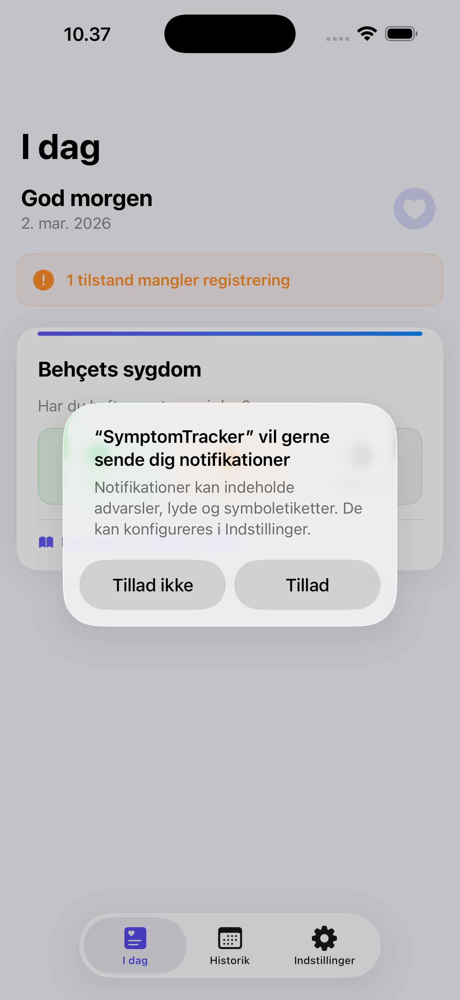
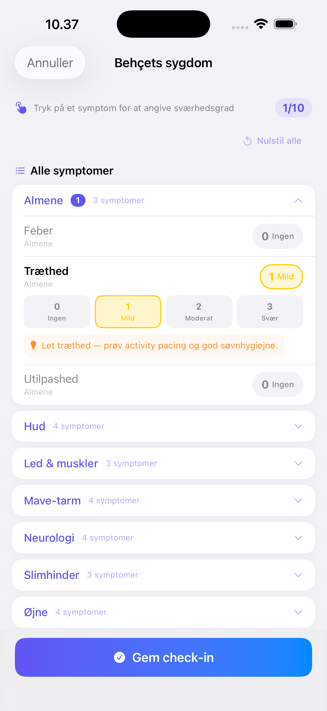
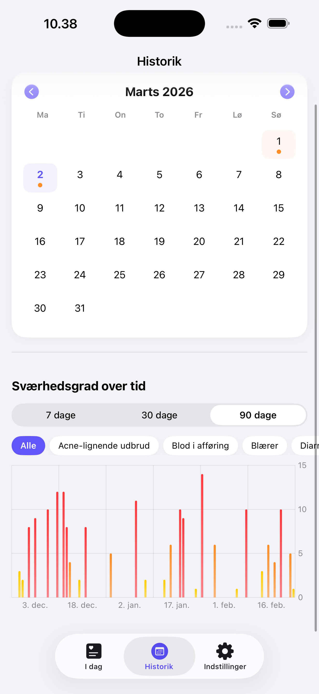
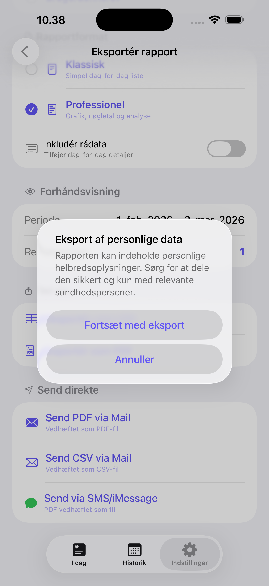
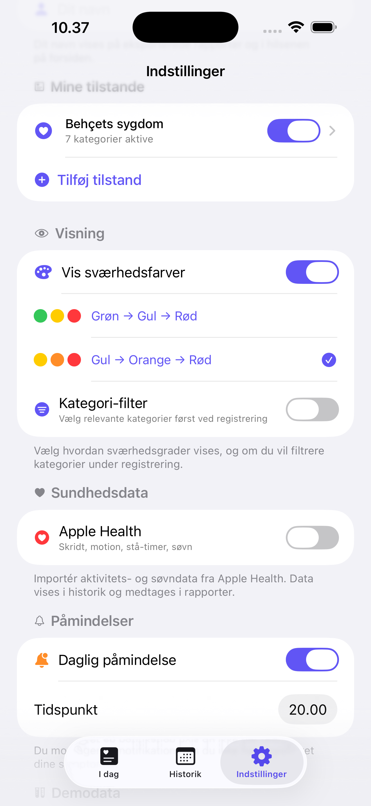

SymptomTracker
Hold styr på dine symptomer og få indsigt i din kroniske sygdom — nu på iPhone, iPad og Mac. Trygt og privat, direkte på din enhed.
Se appen i aktion
Enkel symptomregistrering, historik, eksport og meget mere.





Komplet vejledning
Denne guide dækker alle funktioner i SymptomTracker, så du hurtigt kan komme i gang med at registrere og følge dine symptomer.
Kom godt i gang
Download og åbn appen
Hent SymptomTracker gratis fra App Store. Når du åbner appen første gang, mødes du af en introduktion.
Vælg dine tilstande
Vælg en eller flere af de 11 forudkonfigurerede tilstande, der passer til din situation. Du kan altid tilføje eller fjerne tilstande senere i indstillinger.
Tilpas dine symptomer
Hver tilstand har forudvalgte symptomer. I simpel tilstand vises kun 3 kernesymptomer. I avanceret tilstand ser du alle tilgængelige symptomer, organiseret i kategorier.
Indstil daglig påmindelse
Vælg et tidspunkt for din daglige påmindelse. Du modtager en notifikation med mulighed for at registrere direkte, snooze 30 minutter eller springe over.
Understøttede tilstande
Appen inkluderer 11 forudkonfigurerede tilstande med relevante symptomkategorier:
Hver tilstand har 2-7 symptomkategorier med 3-18 individuelle symptomer. Du kan også oprette egne symptomer.
Daglig registrering (I dag)
Forsiden viser dine aktive tilstande med dagens status. For hver tilstand vælger du:
- Ja, symptomer — åbner check-in-flowet, hvor du angiver sværhedsgrad (0-3) for hvert symptom
- Nej, ingen symptomer — registrerer en symptomfri dag med ét tryk
- Ikke nu — springer registreringen over for nu
- Samme som i går — kopierer gårsdagens registrering, hvis du har det uændret
Streak-system: Hold din streak i gang ved at registrere dagligt. En bjørne-maskot reagerer på din streak — og du må gerne springe én dag over uden at miste den.
Simpel vs. avanceret tilstand
Simpel tilstand (standard)
Viser kun 3 kernesymptomer pr. tilstand med store knapper. Ideel til hurtig daglig registrering. Ca. 30 sekunder.
Avanceret tilstand
Alle symptomer, kategorier, triggertags, medicin, kropsdiagram, fotoregistrering og noter. Slås til i indstillinger.
Check-in detaljer (avanceret tilstand)
Når du vælger "Ja, symptomer" i avanceret tilstand, kan du registrere:
- Sværhedsgrad pr. symptom: 0 (ingen), 1 (mild), 2 (moderat), 3 (svær)
- Medicin: Navn, dosis og effekt (ingen/nogen/god)
- Triggertags: Stress, vejr, træthed, søvn, kost, aktivitet, menstruation m.fl.
- Kropsdiagram: Marker smerteområder på en interaktiv kropsfigur
- Fotoregistrering: Tag op til 3 billeder (fx hudforandringer)
- Noter: Fritekst-observationer til yderligere kontekst
Historik
Historik-fanen viser dine registreringer i en kalender med farvekodede dage:
- Grøn — symptomer registreret
- Orange — ingen symptomer
- Grå — ikke registreret
Tryk på en dato for at se alle detaljer: symptomer, sværhedsgrad, medicin, triggere, noter, vejrdata og sundhedsdata.
7-dages diagram
Nederst på forsiden vises et søjlediagram med de seneste 7 dages symptomdata. Hvis du har flere tilstande, vises de med forskellige farver, så du kan sammenligne forløbene.
Mønstre og indsigt
Mønster-fanen analyserer dine data (kræver mindst 14 dages registreringer) og viser:
- Trigger-mønstre: Hvilke triggere (stress, vejr, søvn osv.) korrelerer med dine symptomer
- Vejrmønstre: Sammenhæng mellem temperatur, luftfugtighed og symptomer
- Medicineffekt: Hvor ofte du tager medicin, og hvor effektiv den er
- Symptom-mønstre: Hvilke symptomer optræder sammen
Eksport og rapporter
Del dine data med din læge via eksport-fanen:
Send rapport via Mail (standard)
Én-trykks-eksport: Vælg tidsperiode, og send en professionel PDF-rapport direkte via Mail.
Avancerede eksportmuligheder
Under "Flere muligheder" finder du CSV-eksport, udvidet PDF med daglige detaljer, konsultationsrapport, SMS-afsendelse og delingsark.
Rapporterne indeholder oversigt over symptomfrekvens, sværhedsfordeling, medicinforbrug, triggere, sundhedsdata og noter.
Indstillinger
Profil
Angiv dit navn, som vises i hilsenen og på rapporter.
Mine tilstande
Tilføj, fjern eller rediger dine aktive tilstande og symptomer.
Visning
Vælg simpel/avanceret tilstand, sværhedsfarveskema og kategorifilter.
Sundhedsdata
Aktiver Apple Health (skridt, søvn, puls, HRV, SpO2) og vejrdata.
Sikkerhed
Aktiver Face ID / Touch ID for at beskytte dine data.
Påmindelser
Indstil daglig påmindelse med valgfrit tidspunkt og ugentlig opsummering.
Backup
Eksportér og importér en komplet backup af dine data i JSON-format.
Demodata
Indlæs 90 dages realistisk testdata for at prøve alle funktioner.
Widget
Tilføj SymptomTracker-widgeten til din hjemmeskærm for hurtigt overblik:
- Se om du har registreret i dag (grøn/orange status)
- Din aktuelle streak med flamme-ikon
- Tryk for at åbne appen direkte
iPad og Mac (nyt i version 2.0)
SymptomTracker kører nu også på iPad og Mac via Mac Catalyst, med en fuldt tilpasset oplevelse på alle platforme.
Mac-understøttelse
Kør appen direkte på din Mac med macOS 14.0 (Sonoma) eller nyere. Fuldt integreret via Mac Catalyst.
Sidebar-navigation (iPad/Mac)
På iPad og Mac vises en sidebar med hurtig adgang til I dag, Historik, Mønstre, Eksport og Indstillinger.
Tilpasset layout
Appen tilpasser sig automatisk den større skærm med optimeret placering af elementer og mere plads til data.
Samme data, alle enheder
Dine data gemmes lokalt på hver enhed. Brug backup-funktionen til at overføre data mellem enheder.
Kodeordsbeskyttet PDF-eksport (nyt i version 2.0)
For at beskytte dine følsomme helbredsoplysninger i overensstemmelse med GDPR kan du nu eksportere PDF-rapporter med kodeordsbeskyttelse.
Krypteret PDF
Rapporter kan låses med et kodeord, så kun modtageren kan åbne dem.
Send koden separat
Send kodeordet via SMS eller anden kanal, så rapporten er beskyttet under transport.
GDPR-anbefaling: Brug altid kodeordsbeskyttet PDF, når du sender helbredsdata via e-mail. Det sikrer, at dine følsomme oplysninger er beskyttet, selv hvis mailen opsnappes.
Tips til bedst mulig brug
Registrér hver dag — selv på symptomfri dage. Det giver din læge et komplet billede og styrker dine mønsteranalyser.
- Start med simpel tilstand og skift til avanceret, når du er klar
- Brug "Samme som i går" på dage uden ændringer
- Aktiver Apple Health for at se sammenhæng mellem aktivitet og symptomer
- Eksportér en rapport inden dit næste lægebesøg
- Hold din streak i gang — det motiverer daglig registrering
GDPR og dit dataansvar
SymptomTracker er designet med databeskyttelse som grundprincip (privacy by design). Herunder forklarer vi, hvordan dine data håndteres — og hvad dit ansvar er som bruger.
Alle data forbliver på din enhed. SymptomTracker sender aldrig data automatisk. Ingen data forlader din iPhone, iPad eller Mac, medmindre du selv aktivt vælger at eksportere eller dele dem.
Du er dataansvarlig
Som bruger af SymptomTracker er du selv dataansvarlig for dine personlige helbredsoplysninger i henhold til GDPR (EU's databeskyttelsesforordning). Det betyder:
- Du bestemmer: Du beslutter selv, hvornår og med hvem dine data deles
- Du handler: Appen sender aldrig noget automatisk — al eksport og deling kræver din aktive handling
- Du kontrollerer: Du kan til enhver tid slette dine data ved at slette appen eller enkelte registreringer
Hvad er helbredsoplysninger?
Under GDPR er helbredsoplysninger klassificeret som "særlige kategorier af personoplysninger" (artikel 9), der kræver ekstra beskyttelse. Dine symptomregistreringer, medicinbrug og sundhedsdata falder ind under denne kategori.
Når du eksporterer data
Når du sender en rapport via mail, SMS eller delingsark, forlader dine helbredsoplysninger enheden. Vær opmærksom på følgende:
- E-mail er ikke krypteret: Almindelig e-mail er ikke end-to-end-krypteret. Del kun rapporter med personer, du har tillid til (fx din læge)
- Kodeordsbeskyttelse: Appen tilbyder kodeordsbeskyttede PDF-rapporter. Brug denne funktion og send kodeordet via en separat kanal (fx SMS)
- Sikkert alternativ: Overvej at bruge AirDrop i konsultationen eller vise rapporten direkte fra telefonen
Anbefaling: Brug altid kodeordsbeskyttet PDF, når du sender rapporter via e-mail. Send koden via SMS til modtageren.
Dataopbevaring
Kun lokal lagring
Data gemmes udelukkende på din enhed via Apples SwiftData. Ingen cloud, ingen servere.
Ingen tredjeparter
Ingen analyseværktøjer, reklamenetværk eller eksterne SDK'er. Ingen tracking overhovedet.
Biometrisk sikkerhed
Beskyt appen med Face ID eller Touch ID, så andre ikke kan åbne den.
Ret til sletning
Slet appen, og alle data fjernes permanent. Ingen skjulte kopier.
Apple Health-data
Hvis du aktiverer Apple Health-integration, læser appen sundhedsdata (skridt, søvn, puls mv.) via Apples HealthKit. Denne data:
- Læses kun, når du åbner appen — aldrig i baggrunden
- Gemmes ikke permanent — den hentes frisk fra HealthKit
- Kan inkluderes i eksporterede rapporter, hvis du vælger det
- Deles aldrig med tredjeparter
Dine rettigheder under GDPR
Da alle data er lokale på din enhed, har du fuld kontrol:
- Indsigtsret: Se alle dine data direkte i appen (historik, mønstre, eksport)
- Ret til berigtigelse: Rediger tidligere registreringer når som helst
- Ret til sletning: Slet individuelle registreringer eller hele appen
- Ret til dataportabilitet: Eksportér alle data som CSV, PDF eller JSON-backup
Kontakt vedrørende databeskyttelse
Har du spørgsmål om, hvordan SymptomTracker håndterer dine data, er du velkommen til at kontakte udvikleren:
Michael Skov Hejmadi — hejmadi@gmail.com
Privatlivspolitik
Hos SymptomTracker tager vi dit privatliv alvorligt. Denne politik beskriver, hvordan appen håndterer dine data.
Alle dine data forbliver lokalt på din enhed. Vi indsamler, transmitterer eller deler ingen personlige oplysninger.
Hvilke data gemmer appen?
SymptomTracker gemmer følgende data lokalt på din enhed via Apples SwiftData:
- Symptomregistreringer og daglige check-ins
- Tilstande/diagnoser du opretter
- Noter og kommentarer
- Brugernavn (valgfrit, kun til visning på rapporter)
Apple Health (HealthKit)
Hvis du vælger at aktivere Apple Health-integration, kan appen læse følgende sundhedsdata:
- Skridt (dagligt antal)
- Aktiv energi og bevægelsesminutter
- Stå-timer
- Søvnanalyse
Disse data læses udelukkende for at vise dem sammen med dine symptomregistreringer. Data transmitteres aldrig fra din enhed og deles ikke med tredjeparter. Du kan til enhver tid deaktivere denne funktion i appens indstillinger.
Tredjeparter
SymptomTracker bruger ingen tredjepartsanalyseværktøjer, reklamenetværk, SDK'er eller eksterne tjenester. Appen indeholder ingen tracking.
Eksport af data
Du kan eksportere dine data som PDF- eller CSV-rapport via Mail eller SMS. Eksporten sker direkte fra din enhed, og vi har aldrig adgang til det eksporterede indhold.
Børns privatliv
SymptomTracker er ikke rettet mod børn under 13 år. Vi indsamler ikke bevidst data fra børn.
Ændringer til denne politik
Hvis vi opdaterer denne politik, vil ændringerne blive offentliggjort på denne side med en ny dato herunder.
Support
Har du spørgsmål, problemer eller forslag til SymptomTracker? Vi hjælper gerne!
Ofte stillede spørgsmål
Hvordan registrerer jeg symptomer?
Åbn appen og vælg en tilstand på forsiden. Tryk på "Ja, symptomer" og angiv sværhedsgrad (0-3) for hvert symptom. I simpel tilstand ser du kun 3 kernesymptomer; i avanceret tilstand kan du også tilføje medicin, triggere, kropsdiagram og noter.
Hvad er forskellen på simpel og avanceret tilstand?
Simpel tilstand (standard) viser kun 3 kernesymptomer pr. tilstand med store knapper — ideel til hurtig daglig registrering. Avanceret tilstand giver adgang til alle symptomer, kategorier, triggertags, medicin, kropsdiagram og fotoregistrering. Skift i Indstillinger under "Symptomtilstand".
Hvordan fungerer streak-systemet?
Din streak tæller antal sammenhængende dage med registreringer. Bjørne-maskotten reagerer på din streak. Du må gerne springe én dag over uden at miste din streak. Milepæle vises ved 7 dage, 14 dage, 30 dage og mere.
Hvordan eksporterer jeg mine data?
Gå til eksport-fanen og tryk "Send rapport via Mail" for at sende en professionel PDF-rapport. Under "Flere muligheder" finder du CSV-eksport, udvidede rapportformater og SMS-afsendelse. Vælg tidsperiode fra 7 dage til 6 måneder.
Hvordan aktiverer jeg Apple Health?
Gå til Indstillinger > Sundhedsdata og slå Apple Health til. Appen læser skridt, søvn, puls, HRV, SpO2 og mere. Data vises sammen med dine registreringer og i eksporterede rapporter. Du kan deaktivere det igen når som helst.
Kan jeg bruge appen på flere enheder?
SymptomTracker kører på iPhone, iPad og Mac. Data gemmes lokalt på hver enhed. Du kan lave en backup (Indstillinger > Backup) og overføre den til en anden enhed, men automatisk synkronisering er ikke tilgængelig.
Hvordan beskytter jeg mine data?
Aktiver Face ID eller Touch ID i Indstillinger > Sikkerhed. Appen låser automatisk, når du forlader den.
Tekniske krav
- iOS 17.0 / iPadOS 17.0 eller nyere
- macOS 14.0 (Sonoma) eller nyere (via Mac Catalyst)
- iPhone, iPad eller Mac
- Ca. 15 MB lagerplads
Kontakt
Du er velkommen til at kontakte udvikleren direkte:
5000 Odense C
Danmark